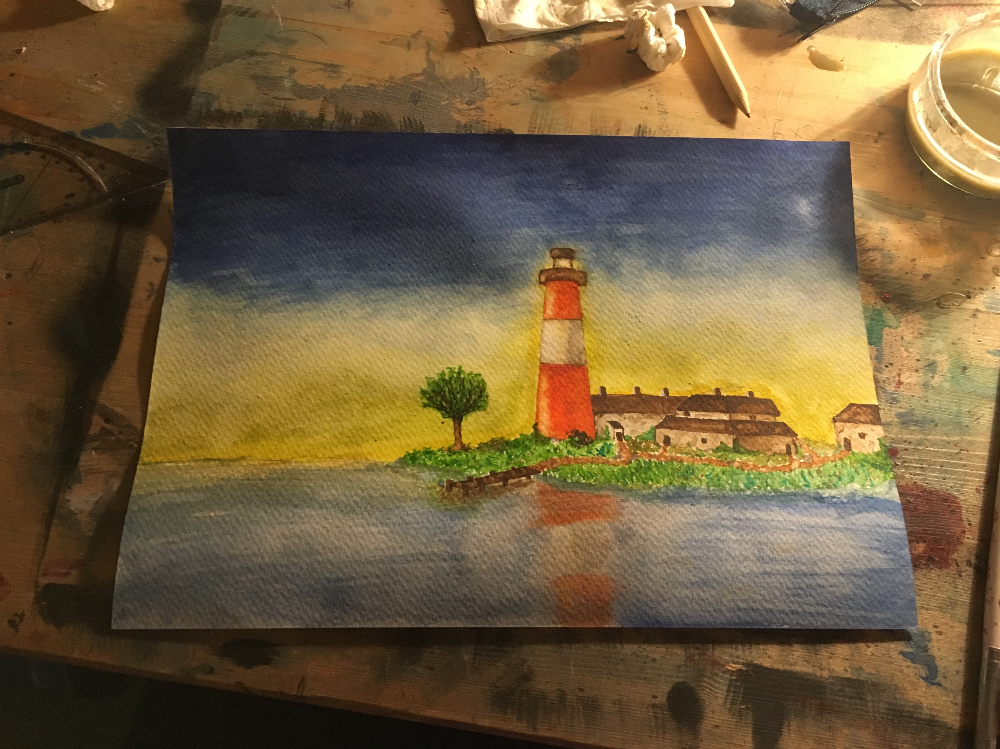
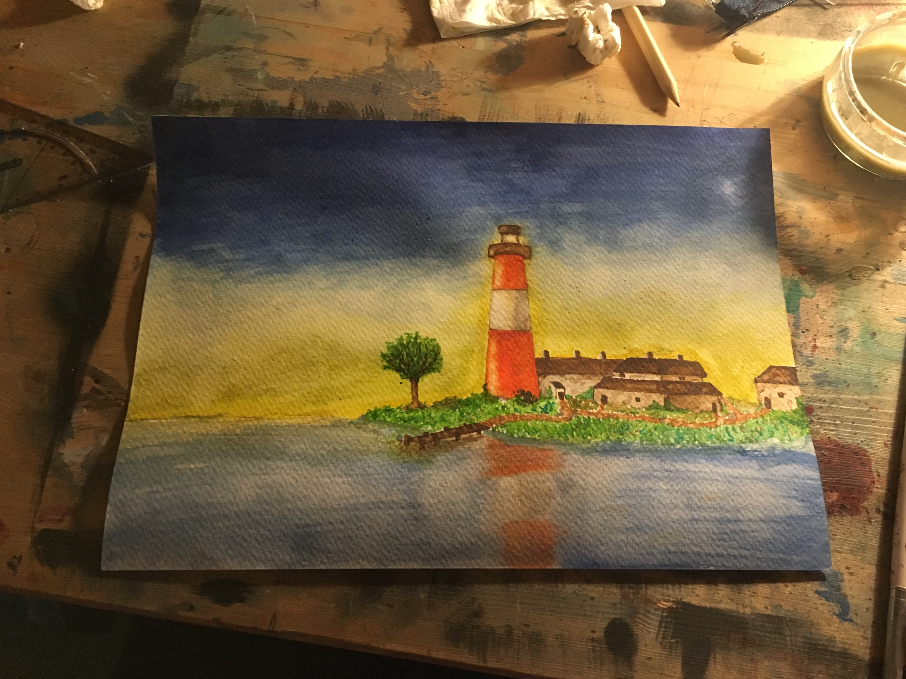

Project Dionysus
Developing small scale games using a variety of software.
Dionysus, the god of festivity and theatre.
This project began during my A-level computer science classes where we were assigned a task to create a piece of software with an engaging function.
Evidently the definition of engaging function covers a broad area but for me, someone who has spent a lot of time playing video games recreationally,
I figured what better to develop then something I can be passionate about and have experience using. Thus, I decided to develop for my project a game
that would be reflection of what it is I enjoy as well as being something that could be accomplished within the scope of an a-level class. One of my
favorite games growing up was a game called Dragon Quest, specifically the 9th Dragon Quest on the DS. Being arguably my favorite game but also a
relatively simple 2D RPG I decided it was a great candidate for a style to emulate for my own project. Over the course of the following year, I dedicated
a portion of my time to developing this game. I managed to produce a working Dragon Quest style fighting mechanic and an explorable 2D world with random
encounters. The project now had a structured game engine for which to add content to however due to the nature of the project being a coding one and
the fact that all it needed now was art, characters, and world building, this is where the project drew to a close for the purposes of my class. After
finishing six form I decided to spend my summer developing a new game this time in 3D providing a whole host of new challenges.
Developing a new three game was a very different challenge as most of my world would now be built in 3D rather than simple 2D pixel drawings.
This began my first introduction to the 3D modeling software blender. In blender I developed a sailing ship as a test ground for how to use the
software. From reading my about section you may know of my interest in sailing ships. In tandem to this interest comes that of the pirate setting,
a time where the primary vessel was a sailing ship. Having built in blender a 3D model of a ship I decided the next project would be one of a
pirate’s style ship fighting arena combat game. I also endeavored to create an upgradeable hometown where you could develop new materials and buildings
to upgrade your ships with. To start though I had to develop a system for naval combat, this used a variety of ship movement controls real game object
projectiles and the custom developed enemy AI system to create engaging combatants. After this I created an upgrades screen where you could customize
your boat using currency you have collected when destroying enemy vessels to increase parameters such as your whole strength and cannon power. I then
began attempting to create a small town with layered customizable buildings and layouts. I created a few models for various buildings and had a general
idea of what I was going to implement. However, the start of the university term was soon approaching, and I shelved this project as I began my studies.
I endeavor to one day pick up where I left off and continue development of this game however my current responsibilities to university and to my
extracurricular activities require it to stay shelved for now.
Key Skills Acquired
- Unity Game engine
- My main development space: utilised a range of tools and produced a congruent 2D and 3D game.
- C#
- Developing 1000s of lines of code to produce physical effects on the users screen relying on the Unity function's library and general C# knowledge.
- Blender
- Creating detailed 3D models of buildings, boats and items. Utilising a 3D modeling tool to produce accurate shapes and structures.
 
